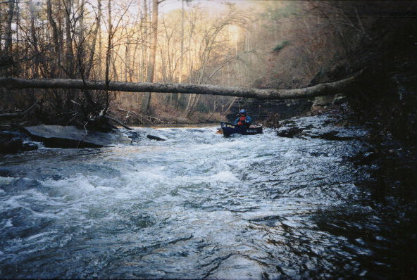
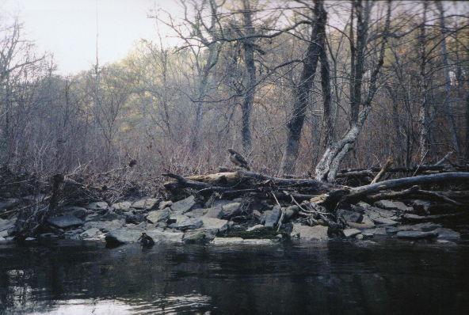
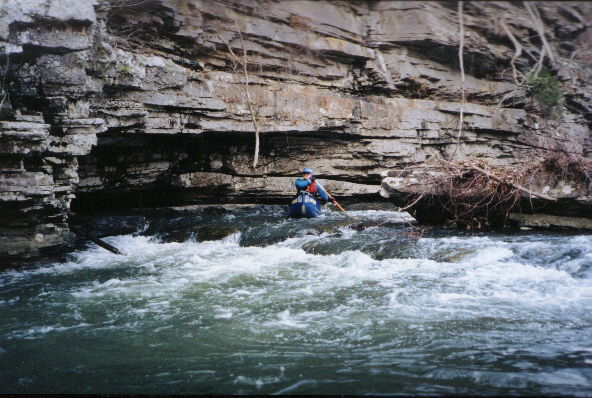

Upper Blackburn Fork of the Warrior

Chris Parker ducks under a log that would be a problem at higher water. These pictures are taken at REALLY low water.

A large hawk was feasting on that deer carcass to the bottom right.

The bluffs are nice.